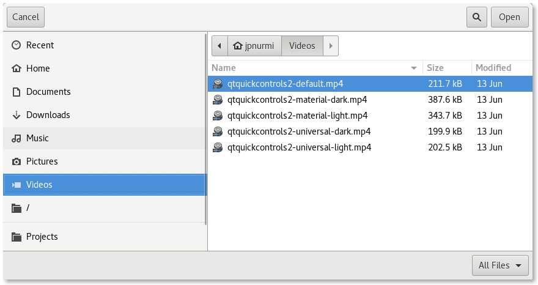

QFileDialog Class
The QFileDialog class provides a dialog that allows users to select files or directories. More...
| Header: | #include <QFileDialog> |
| CMake: | find_package(Qt6 REQUIRED COMPONENTS Widgets) target_link_libraries(mytarget PRIVATE Qt6::Widgets) |
| qmake: | QT += widgets |
| Inherits: | QDialog |
- List of all members, including inherited members
- QFileDialog is part of Standard Dialogs.
Public Types
| enum | AcceptMode { AcceptOpen, AcceptSave } |
| enum | DialogLabel { LookIn, FileName, FileType, Accept, Reject } |
| enum | FileMode { AnyFile, ExistingFile, Directory, ExistingFiles } |
| enum | Option { ShowDirsOnly, DontResolveSymlinks, DontConfirmOverwrite, DontUseNativeDialog, ReadOnly, …, DontUseCustomDirectoryIcons } |
| flags | Options |
| enum | ViewMode { Detail, List } |
Properties
|
|
Public Functions
| QFileDialog(QWidget *parent, Qt::WindowFlags flags) | |
| QFileDialog(QWidget *parent = nullptr, const QString &caption = QString(), const QString &directory = QString(), const QString &filter = QString()) | |
| virtual | ~QFileDialog() |
| QFileDialog::AcceptMode | acceptMode() const |
| QString | defaultSuffix() const |
| QDir | directory() const |
| QUrl | directoryUrl() const |
| QFileDialog::FileMode | fileMode() const |
| QDir::Filters | filter() const |
| QStringList | history() const |
| QAbstractFileIconProvider * | iconProvider() const |
| QAbstractItemDelegate * | itemDelegate() const |
| QString | labelText(QFileDialog::DialogLabel label) const |
| QStringList | mimeTypeFilters() const |
| QStringList | nameFilters() const |
| void | open(QObject *receiver, const char *member) |
| QFileDialog::Options | options() const |
| QAbstractProxyModel * | proxyModel() const |
| bool | restoreState(const QByteArray &state) |
| QByteArray | saveState() const |
| void | selectFile(const QString &filename) |
| void | selectMimeTypeFilter(const QString &filter) |
| void | selectNameFilter(const QString &filter) |
| void | selectUrl(const QUrl &url) |
| QStringList | selectedFiles() const |
| QString | selectedMimeTypeFilter() const |
| QString | selectedNameFilter() const |
| QList<QUrl> | selectedUrls() const |
| void | setAcceptMode(QFileDialog::AcceptMode mode) |
| void | setDefaultSuffix(const QString &suffix) |
| void | setDirectory(const QString &directory) |
| void | setDirectory(const QDir &directory) |
| void | setDirectoryUrl(const QUrl &directory) |
| void | setFileMode(QFileDialog::FileMode mode) |
| void | setFilter(QDir::Filters filters) |
| void | setHistory(const QStringList &paths) |
| void | setIconProvider(QAbstractFileIconProvider *provider) |
| void | setItemDelegate(QAbstractItemDelegate *delegate) |
| void | setLabelText(QFileDialog::DialogLabel label, const QString &text) |
| void | setMimeTypeFilters(const QStringList &filters) |
| void | setNameFilter(const QString &filter) |
| void | setNameFilters(const QStringList &filters) |
| void | setOption(QFileDialog::Option option, bool on = true) |
| void | setOptions(QFileDialog::Options options) |
| void | setProxyModel(QAbstractProxyModel *proxyModel) |
| void | setSidebarUrls(const QList<QUrl> &urls) |
| void | setSupportedSchemes(const QStringList &schemes) |
| void | setViewMode(QFileDialog::ViewMode mode) |
| QList<QUrl> | sidebarUrls() const |
| QStringList | supportedSchemes() const |
| bool | testOption(QFileDialog::Option option) const |
| QFileDialog::ViewMode | viewMode() const |
Reimplemented Public Functions
| virtual void | setVisible(bool visible) override |
Signals
| void | currentChanged(const QString &path) |
| void | currentUrlChanged(const QUrl &url) |
| void | directoryEntered(const QString &directory) |
| void | directoryUrlEntered(const QUrl &directory) |
| void | fileSelected(const QString &file) |
| void | filesSelected(const QStringList &selected) |
| void | filterSelected(const QString &filter) |
| void | urlSelected(const QUrl &url) |
| void | urlsSelected(const QList<QUrl> &urls) |
Static Public Members
| QString | getExistingDirectory(QWidget *parent = nullptr, const QString &caption = QString(), const QString &dir = QString(), QFileDialog::Options options = ShowDirsOnly) |
| QUrl | getExistingDirectoryUrl(QWidget *parent = nullptr, const QString &caption = QString(), const QUrl &dir = QUrl(), QFileDialog::Options options = ShowDirsOnly, const QStringList &supportedSchemes = QStringList()) |
| void | getOpenFileContent(const QString &nameFilter, const std::function<void (const QString &, const QByteArray &)> &fileOpenCompleted, QWidget *parent = nullptr) |
| QString | getOpenFileName(QWidget *parent = nullptr, const QString &caption = QString(), const QString &dir = QString(), const QString &filter = QString(), QString *selectedFilter = nullptr, QFileDialog::Options options = Options()) |
| QStringList | getOpenFileNames(QWidget *parent = nullptr, const QString &caption = QString(), const QString &dir = QString(), const QString &filter = QString(), QString *selectedFilter = nullptr, QFileDialog::Options options = Options()) |
| QUrl | getOpenFileUrl(QWidget *parent = nullptr, const QString &caption = QString(), const QUrl &dir = QUrl(), const QString &filter = QString(), QString *selectedFilter = nullptr, QFileDialog::Options options = Options(), const QStringList &supportedSchemes = QStringList()) |
| QList<QUrl> | getOpenFileUrls(QWidget *parent = nullptr, const QString &caption = QString(), const QUrl &dir = QUrl(), const QString &filter = QString(), QString *selectedFilter = nullptr, QFileDialog::Options options = Options(), const QStringList &supportedSchemes = QStringList()) |
| QString | getSaveFileName(QWidget *parent = nullptr, const QString &caption = QString(), const QString &dir = QString(), const QString &filter = QString(), QString *selectedFilter = nullptr, QFileDialog::Options options = Options()) |
| QUrl | getSaveFileUrl(QWidget *parent = nullptr, const QString &caption = QString(), const QUrl &dir = QUrl(), const QString &filter = QString(), QString *selectedFilter = nullptr, QFileDialog::Options options = Options(), const QStringList &supportedSchemes = QStringList()) |
| void | saveFileContent(const QByteArray &fileContent, const QString &fileNameHint, QWidget *parent = nullptr) |
Reimplemented Protected Functions
| virtual void | accept() override |
| virtual void | changeEvent(QEvent *e) override |
| virtual void | done(int result) override |
Detailed Description
The QFileDialog class enables a user to traverse the file system to select one or many files or a directory.

The easiest way to create a QFileDialog is to use the static functions, such as getOpenFileName().
fileName = QFileDialog::getOpenFileName(this, tr("Open Image"), "/home/jana", tr("Image Files (*.png *.jpg *.bmp)"));
In the above example, a modal QFileDialog is created using a static function. The dialog initially displays the contents of the "/home/jana" directory, and displays files matching the patterns given in the string "Image Files (*.png *.jpg *.bmp)". The parent of the file dialog is set to this, and the window title is set to "Open Image".
If you want to use multiple filters, separate each one with two semicolons. For example:
"Images (*.png *.xpm *.jpg);;Text files (*.txt);;XML files (*.xml)"
You can create your own QFileDialog without using the static functions. By calling setFileMode(), you can specify what the user must select in the dialog:
QFileDialog dialog(this); dialog.setFileMode(QFileDialog::AnyFile);
In the above example, the mode of the file dialog is set to AnyFile, meaning that the user can select any file, or even specify a file that doesn't exist. This mode is useful for creating a "Save As" file dialog. Use ExistingFile if the user must select an existing file, or Directory if only a directory can be selected. See the QFileDialog::FileMode enum for the complete list of modes.
The fileMode property contains the mode of operation for the dialog; this indicates what types of objects the user is expected to select. Use setNameFilter() to set the dialog's file filter. For example:
dialog.setNameFilter(tr("Images (*.png *.xpm *.jpg)"));
In the above example, the filter is set to "Images (*.png *.xpm *.jpg)". This means that only files with the extension png, xpm, or jpg are shown in the QFileDialog. You can apply several filters by using setNameFilters(). Use selectNameFilter() to select one of the filters you've given as the file dialog's default filter.
The file dialog has two view modes: List and Detail. List presents the contents of the current directory as a list of file and directory names. Detail also displays a list of file and directory names, but provides additional information alongside each name, such as the file size and modification date. Set the mode with setViewMode():
dialog.setViewMode(QFileDialog::Detail);
The last important function you need to use when creating your own file dialog is selectedFiles().
QStringList fileNames; if (dialog.exec()) fileNames = dialog.selectedFiles();
In the above example, a modal file dialog is created and shown. If the user clicked OK, the file they selected is put in fileName.
The dialog's working directory can be set with setDirectory(). Each file in the current directory can be selected using the selectFile() function.
The Standard Dialogs example shows how to use QFileDialog as well as other built-in Qt dialogs.
By default, a platform-native file dialog is used if the platform has one. In that case, the widgets that would otherwise be used to construct the dialog are not instantiated, so related accessors such as layout() and itemDelegate() return null. Also, not all platforms show file dialogs with a title bar, so be aware that the caption text might not be visible to the user. You can set the DontUseNativeDialog option or set the AA_DontUseNativeDialogs application attribute to ensure that the widget-based implementation is used instead of the native dialog.
See also QDir, QFileInfo, QFile, QColorDialog, QFontDialog, and Standard Dialogs Example.
Member Type Documentation
enum QFileDialog::AcceptMode
| Constant | Value |
|---|---|
QFileDialog::AcceptOpen | 0 |
QFileDialog::AcceptSave | 1 |
enum QFileDialog::DialogLabel
| Constant | Value |
|---|---|
QFileDialog::LookIn | 0 |
QFileDialog::FileName | 1 |
QFileDialog::FileType | 2 |
QFileDialog::Accept | 3 |
QFileDialog::Reject | 4 |
enum QFileDialog::FileMode
This enum is used to indicate what the user may select in the file dialog; that is, what the dialog returns if the user clicks OK.
| Constant | Value | Description |
|---|---|---|
QFileDialog::AnyFile | 0 | The name of a file, whether it exists or not. |
QFileDialog::ExistingFile | 1 | The name of a single existing file. |
QFileDialog::Directory | 2 | The name of a directory. Both files and directories are displayed. However, the native Windows file dialog does not support displaying files in the directory chooser. |
QFileDialog::ExistingFiles | 3 | The names of zero or more existing files. |
See also setFileMode().
enum QFileDialog::Option
flags QFileDialog::Options
Options that influence the behavior of the dialog.
| Constant | Value | Description |
|---|---|---|
QFileDialog::ShowDirsOnly | 0x00000001 | Only show directories. By default, both files and directories are shown. This option is only effective in the Directory file mode. |
QFileDialog::DontResolveSymlinks | 0x00000002 | Don't resolve symlinks. By default, symlinks are resolved. |
QFileDialog::DontConfirmOverwrite | 0x00000004 | Don't ask for confirmation if an existing file is selected. By default, confirmation is requested. This option is only effective if acceptMode is AcceptSave). It is furthermore not used on macOS for native file dialogs. |
QFileDialog::DontUseNativeDialog | 0x00000008 | Don't use a platform-native file dialog, but the widget-based one provided by Qt. By default, a native file dialog is shown unless you use a subclass of QFileDialog that contains the Q_OBJECT macro, the global AA_DontUseNativeDialogs application attribute is set, or the platform does not have a native dialog of the type that you require. For the option to be effective, you must set it before changing other properties of the dialog, or showing the dialog. |
QFileDialog::ReadOnly | 0x00000010 | Indicates that the model is read-only. |
QFileDialog::HideNameFilterDetails | 0x00000020 | Indicates if the file name filter details are hidden or not. |
QFileDialog::DontUseCustomDirectoryIcons | 0x00000040 | Always use the default directory icon. Some platforms allow the user to set a different icon, but custom icon lookup might cause significant performance issues over network or removable drives. Setting this will enable the DontUseCustomDirectoryIcons option in iconProvider(). This enum value was added in Qt 5.2. |
The Options type is a typedef for QFlags<Option>. It stores an OR combination of Option values.
See also options and testOption.
enum QFileDialog::ViewMode
This enum describes the view mode of the file dialog; that is, what information about each file is displayed.
| Constant | Value | Description |
|---|---|---|
QFileDialog::Detail | 0 | Displays an icon, a name, and details for each item in the directory. |
QFileDialog::List | 1 | Displays only an icon and a name for each item in the directory. |
See also setViewMode().
Property Documentation
acceptMode : AcceptMode
This property holds the accept mode of the dialog.
The action mode defines whether the dialog is for opening or saving files.
By default, this property is set to AcceptOpen.
Access functions:
| QFileDialog::AcceptMode | acceptMode() const |
| void | setAcceptMode(QFileDialog::AcceptMode mode) |
See also AcceptMode.
defaultSuffix : QString
Suffix added to the filename if no other suffix was specified.
This property specifies a string that is added to the filename if it has no suffix yet. The suffix is typically used to indicate the file type (e.g. "txt" indicates a text file).
If the first character is a dot ('.'), it is removed.
Access functions:
| QString | defaultSuffix() const |
| void | setDefaultSuffix(const QString &suffix) |
fileMode : FileMode
This property holds the file mode of the dialog.
The file mode defines the number and type of items that the user is expected to select in the dialog.
By default, this property is set to AnyFile.
This function sets the labels for the FileName and Accept DialogLabels. It is possible to set custom text after the call to setFileMode().
Access functions:
| QFileDialog::FileMode | fileMode() const |
| void | setFileMode(QFileDialog::FileMode mode) |
See also FileMode.
options : Options
This property holds the various options that affect the look and feel of the dialog.
By default, all options are disabled.
Options (particularly the DontUseNativeDialog option) should be set before changing dialog properties or showing the dialog.
Setting options while the dialog is visible is not guaranteed to have an immediate effect on the dialog (depending on the option and on the platform).
Setting options after changing other properties may cause these values to have no effect.
Access functions:
| QFileDialog::Options | options() const |
| void | setOptions(QFileDialog::Options options) |
See also setOption() and testOption().
supportedSchemes : QStringList
This property holds the URL schemes that the file dialog should allow navigating to.
Setting this property allows to restrict the type of URLs the user can select. It is a way for the application to declare the protocols it supports to fetch the file content. An empty list means that no restriction is applied (the default). Support for local files ("file" scheme) is implicit and always enabled; it is not necessary to include it in the restriction.
Access functions:
| QStringList | supportedSchemes() const |
| void | setSupportedSchemes(const QStringList &schemes) |
viewMode : ViewMode
This property holds the way files and directories are displayed in the dialog.
By default, the Detail mode is used to display information about files and directories.
Access functions:
| QFileDialog::ViewMode | viewMode() const |
| void | setViewMode(QFileDialog::ViewMode mode) |
See also ViewMode.
Member Function Documentation
QFileDialog::QFileDialog(QWidget *parent, Qt::WindowFlags flags)
Constructs a file dialog with the given parent and widget flags.
[explicit] QFileDialog::QFileDialog(QWidget *parent = nullptr, const QString &caption = QString(), const QString &directory = QString(), const QString &filter = QString())
Constructs a file dialog with the given parent and caption that initially displays the contents of the specified directory. The contents of the directory are filtered before being shown in the dialog, using a semicolon-separated list of filters specified by filter.
[virtual noexcept] QFileDialog::~QFileDialog()
Destroys the file dialog.
[override virtual protected] void QFileDialog::accept()
Reimplements: QDialog::accept().
[override virtual protected] void QFileDialog::changeEvent(QEvent *e)
Reimplements: QWidget::changeEvent(QEvent *event).
[signal] void QFileDialog::currentChanged(const QString &path)
When the current file changes for local operations, this signal is emitted with the new file name as the path parameter.
See also filesSelected().
[signal] void QFileDialog::currentUrlChanged(const QUrl &url)
When the current file changes, this signal is emitted with the new file URL as the url parameter.
See also urlsSelected().
QDir QFileDialog::directory() const
Returns the directory currently being displayed in the dialog.
See also setDirectory().
[signal] void QFileDialog::directoryEntered(const QString &directory)
This signal is emitted for local operations when the user enters a directory.
QUrl QFileDialog::directoryUrl() const
Returns the url of the directory currently being displayed in the dialog.
See also setDirectoryUrl().
[signal] void QFileDialog::directoryUrlEntered(const QUrl &directory)
This signal is emitted when the user enters a directory.
[override virtual protected] void QFileDialog::done(int result)
Reimplements: QDialog::done(int r).
[signal] void QFileDialog::fileSelected(const QString &file)
When the selection changes for local operations and the dialog is accepted, this signal is emitted with the (possibly empty) selected file.
See also currentChanged() and QDialog::Accepted.
[signal] void QFileDialog::filesSelected(const QStringList &selected)
When the selection changes for local operations and the dialog is accepted, this signal is emitted with the (possibly empty) list of selected files.
See also currentChanged() and QDialog::Accepted.
QDir::Filters QFileDialog::filter() const
Returns the filter that is used when displaying files.
See also setFilter().
[signal] void QFileDialog::filterSelected(const QString &filter)
This signal is emitted when the user selects a filter.
[static] QString QFileDialog::getExistingDirectory(QWidget *parent = nullptr, const QString &caption = QString(), const QString &dir = QString(), QFileDialog::Options options = ShowDirsOnly)
This is a convenience static function that returns an existing directory selected by the user.
QString dir = QFileDialog::getExistingDirectory(this, tr("Open Directory"), "/home", QFileDialog::ShowDirsOnly | QFileDialog::DontResolveSymlinks);
This function creates a modal file dialog with the given parent widget. If parent is not nullptr, the dialog is shown centered over the parent widget.
The dialog's working directory is set to dir, and the caption is set to caption. Either of these can be an empty string in which case the current directory and a default caption are used respectively.
The options argument holds various options about how to run the dialog. See the QFileDialog::Option enum for more information on the flags you can pass. To ensure a native file dialog, ShowDirsOnly must be set.
On Windows and macOS, this static function uses the native file dialog and not a QFileDialog. However, the native Windows file dialog does not support displaying files in the directory chooser. You need to pass the DontUseNativeDialog option, or set the global \l{Qt::}{AA_DontUseNativeDialogs} application attribute to display files using a QFileDialog.
Note that the macOS native file dialog does not show a title bar.
On Unix/X11, the normal behavior of the file dialog is to resolve and follow symlinks. For example, if /usr/tmp is a symlink to /var/tmp, the file dialog changes to /var/tmp after entering /usr/tmp. If options includes DontResolveSymlinks, the file dialog treats symlinks as regular directories.
On Windows, the dialog spins a blocking modal event loop that does not dispatch any QTimers, and if parent is not nullptr then it positions the dialog just below the parent's title bar.
Warning: Do not delete parent during the execution of the dialog. If you want to do this, you must create the dialog yourself using one of the QFileDialog constructors.
See also getOpenFileName(), getOpenFileNames(), and getSaveFileName().
[static] QUrl QFileDialog::getExistingDirectoryUrl(QWidget *parent = nullptr, const QString &caption = QString(), const QUrl &dir = QUrl(), QFileDialog::Options options = ShowDirsOnly, const QStringList &supportedSchemes = QStringList())
This is a convenience static function that returns an existing directory selected by the user. If the user presses Cancel, it returns an empty url.
The function is used similarly to QFileDialog::getExistingDirectory(). In particular parent, caption, dir and options are used in exactly the same way.
The main difference with QFileDialog::getExistingDirectory() comes from the ability offered to the user to select a remote directory. That's why the return type and the type of dir is QUrl.
The supportedSchemes argument allows to restrict the type of URLs the user is able to select. It is a way for the application to declare the protocols it supports to fetch the file content. An empty list means that no restriction is applied (the default). Support for local files ("file" scheme) is implicit and always enabled; it is not necessary to include it in the restriction.
When possible, this static function uses the native file dialog and not a QFileDialog. On platforms that don't support selecting remote files, Qt allows to select only local files.
See also getExistingDirectory(), getOpenFileUrl(), getOpenFileUrls(), and getSaveFileUrl().
[static] void QFileDialog::getOpenFileContent(const QString &nameFilter, const std::function<void (const QString &, const QByteArray &)> &fileOpenCompleted, QWidget *parent = nullptr)
This is a convenience static function that returns the content of a file selected by the user.
Use this function to access local files on Qt for WebAssembly, if the web sandbox restricts file access. Its implementation enables displaying a native file dialog in the browser, where the user selects a file based on the nameFilter parameter.
parent is ignored on Qt for WebAssembly. Pass parent on other platforms, to make the popup a child of another widget. If the platform doesn't support native file dialogs, the function falls back to QFileDialog.
The function is asynchronous and returns immediately. The fileOpenCompleted callback will be called when a file has been selected and its contents have been read into memory.
auto fileContentReady = [](const QString &fileName, const QByteArray &fileContent) { if (fileName.isEmpty()) { // No file was selected } else { // Use fileName and fileContent } }; QFileDialog::getOpenFileContent("Images (*.png *.xpm *.jpg)", fileContentReady);
[static] QString QFileDialog::getOpenFileName(QWidget *parent = nullptr, const QString &caption = QString(), const QString &dir = QString(), const QString &filter = QString(), QString *selectedFilter = nullptr, QFileDialog::Options options = Options())
This is a convenience static function that returns an existing file selected by the user. If the user presses Cancel, it returns a null string.
QString fileName = QFileDialog::getOpenFileName(this, tr("Open File"), "/home", tr("Images (*.png *.xpm *.jpg)"));
The function creates a modal file dialog with the given parent widget. If parent is not nullptr, the dialog is shown centered over the parent widget.
The file dialog's working directory is set to dir. If dir includes a file name, the file is selected. Only files that match the given filter are shown. The selected filter is set to selectedFilter. The parameters dir, selectedFilter, and filter may be empty strings. If you want multiple filters, separate them with ';;', for example:
"Images (*.png *.xpm *.jpg);;Text files (*.txt);;XML files (*.xml)"
The options argument holds various options about how to run the dialog. See the QFileDialog::Option enum for more information on the flags you can pass.
The dialog's caption is set to caption. If caption is not specified, then a default caption will be used.
On Windows, and macOS, this static function uses the native file dialog and not a QFileDialog. Note that the macOS native file dialog does not show a title bar.
On Windows the dialog spins a blocking modal event loop that does not dispatch any QTimers, and if parent is not nullptr then it positions the dialog just below the parent's title bar.
On Unix/X11, the normal behavior of the file dialog is to resolve and follow symlinks. For example, if /usr/tmp is a symlink to /var/tmp, the file dialog changes to /var/tmp after entering /usr/tmp. If options includes DontResolveSymlinks, the file dialog treats symlinks as regular directories.
Warning: Do not delete parent during the execution of the dialog. If you want to do this, you must create the dialog yourself using one of the QFileDialog constructors.
See also getOpenFileNames(), getSaveFileName(), and getExistingDirectory().
[static] QStringList QFileDialog::getOpenFileNames(QWidget *parent = nullptr, const QString &caption = QString(), const QString &dir = QString(), const QString &filter = QString(), QString *selectedFilter = nullptr, QFileDialog::Options options = Options())
This is a convenience static function that returns one or more existing files selected by the user.
QStringList files = QFileDialog::getOpenFileNames( this, "Select one or more files to open", "/home", "Images (*.png *.xpm *.jpg)");
This function creates a modal file dialog with the given parent widget. If parent is not nullptr, the dialog is shown centered over the parent widget.
The file dialog's working directory is set to dir. If dir includes a file name, the file is selected. The filter is set to filter so that only those files which match the filter are shown. The filter selected is set to selectedFilter. The parameters dir, selectedFilter and filter can be empty strings. If you need multiple filters, separate them with ';;', for instance:
"Images (*.png *.xpm *.jpg);;Text files (*.txt);;XML files (*.xml)"
The dialog's caption is set to caption. If caption is not specified, then a default caption is used.
On Windows and macOS, this static function uses the native file dialog and not a QFileDialog. Note that the macOS native file dialog does not show a title bar.
On Windows the dialog spins a blocking modal event loop that does not dispatch any QTimers, and if parent is not nullptr then it positions the dialog just below the parent's title bar.
On Unix/X11, the normal behavior of the file dialog is to resolve and follow symlinks. For example, if /usr/tmp is a symlink to /var/tmp, the file dialog will change to /var/tmp after entering /usr/tmp. The options argument holds various options about how to run the dialog, see the QFileDialog::Option enum for more information on the flags you can pass.
Warning: Do not delete parent during the execution of the dialog. If you want to do this, you must create the dialog yourself using one of the QFileDialog constructors.
See also getOpenFileName(), getSaveFileName(), and getExistingDirectory().
[static] QUrl QFileDialog::getOpenFileUrl(QWidget *parent = nullptr, const QString &caption = QString(), const QUrl &dir = QUrl(), const QString &filter = QString(), QString *selectedFilter = nullptr, QFileDialog::Options options = Options(), const QStringList &supportedSchemes = QStringList())
This is a convenience static function that returns an existing file selected by the user. If the user presses Cancel, it returns an empty url.
The function is used similarly to QFileDialog::getOpenFileName(). In particular parent, caption, dir, filter, selectedFilter and options are used in exactly the same way.
The main difference with QFileDialog::getOpenFileName() comes from the ability offered to the user to select a remote file. That's why the return type and the type of dir is QUrl.
The supportedSchemes argument allows to restrict the type of URLs the user is able to select. It is a way for the application to declare the protocols it will support to fetch the file content. An empty list means that no restriction is applied (the default). Support for local files ("file" scheme) is implicit and always enabled; it is not necessary to include it in the restriction.
When possible, this static function uses the native file dialog and not a QFileDialog. On platforms that don't support selecting remote files, Qt will allow to select only local files.
See also getOpenFileName(), getOpenFileUrls(), getSaveFileUrl(), and getExistingDirectoryUrl().
[static] QList<QUrl> QFileDialog::getOpenFileUrls(QWidget *parent = nullptr, const QString &caption = QString(), const QUrl &dir = QUrl(), const QString &filter = QString(), QString *selectedFilter = nullptr, QFileDialog::Options options = Options(), const QStringList &supportedSchemes = QStringList())
This is a convenience static function that returns one or more existing files selected by the user. If the user presses Cancel, it returns an empty list.
The function is used similarly to QFileDialog::getOpenFileNames(). In particular parent, caption, dir, filter, selectedFilter and options are used in exactly the same way.
The main difference with QFileDialog::getOpenFileNames() comes from the ability offered to the user to select remote files. That's why the return type and the type of dir are respectively QList<QUrl> and QUrl.
The supportedSchemes argument allows to restrict the type of URLs the user can select. It is a way for the application to declare the protocols it supports to fetch the file content. An empty list means that no restriction is applied (the default). Support for local files ("file" scheme) is implicit and always enabled; it is not necessary to include it in the restriction.
When possible, this static function uses the native file dialog and not a QFileDialog. On platforms that don't support selecting remote files, Qt will allow to select only local files.
See also getOpenFileNames(), getOpenFileUrl(), getSaveFileUrl(), and getExistingDirectoryUrl().
[static] QString QFileDialog::getSaveFileName(QWidget *parent = nullptr, const QString &caption = QString(), const QString &dir = QString(), const QString &filter = QString(), QString *selectedFilter = nullptr, QFileDialog::Options options = Options())
This is a convenience static function that returns a file name selected by the user. The file does not have to exist.
It creates a modal file dialog with the given parent widget. If parent is not nullptr, the dialog will be shown centered over the parent widget.
QString fileName = QFileDialog::getSaveFileName(this, tr("Save File"), "/home/jana/untitled.png", tr("Images (*.png *.xpm *.jpg)"));
The file dialog's working directory is set to dir. If dir includes a file name, the file is selected. Only files that match the filter are shown. The filter selected is set to selectedFilter. The parameters dir, selectedFilter, and filter may be empty strings. Multiple filters are separated with ';;'. For instance:
"Images (*.png *.xpm *.jpg);;Text files (*.txt);;XML files (*.xml)"
The options argument holds various options about how to run the dialog, see the QFileDialog::Option enum for more information on the flags you can pass.
The default filter can be chosen by setting selectedFilter to the desired value.
The dialog's caption is set to caption. If caption is not specified, a default caption is used.
On Windows, and macOS, this static function uses the native file dialog and not a QFileDialog.
On Windows the dialog spins a blocking modal event loop that does not dispatch any QTimers, and if parent is not nullptr then it positions the dialog just below the parent's title bar. On macOS, with its native file dialog, the filter argument is ignored.
On Unix/X11, the normal behavior of the file dialog is to resolve and follow symlinks. For example, if /usr/tmp is a symlink to /var/tmp, the file dialog changes to /var/tmp after entering /usr/tmp. If options includes DontResolveSymlinks, the file dialog treats symlinks as regular directories.
Warning: Do not delete parent during the execution of the dialog. If you want to do this, you must create the dialog yourself using one of the QFileDialog constructors.
See also getOpenFileName(), getOpenFileNames(), and getExistingDirectory().
[static] QUrl QFileDialog::getSaveFileUrl(QWidget *parent = nullptr, const QString &caption = QString(), const QUrl &dir = QUrl(), const QString &filter = QString(), QString *selectedFilter = nullptr, QFileDialog::Options options = Options(), const QStringList &supportedSchemes = QStringList())
This is a convenience static function that returns a file selected by the user. The file does not have to exist. If the user presses Cancel, it returns an empty url.
The function is used similarly to QFileDialog::getSaveFileName(). In particular parent, caption, dir, filter, selectedFilter and options are used in exactly the same way.
The main difference with QFileDialog::getSaveFileName() comes from the ability offered to the user to select a remote file. That's why the return type and the type of dir is QUrl.
The supportedSchemes argument allows to restrict the type of URLs the user can select. It is a way for the application to declare the protocols it supports to save the file content. An empty list means that no restriction is applied (the default). Support for local files ("file" scheme) is implicit and always enabled; it is not necessary to include it in the restriction.
When possible, this static function uses the native file dialog and not a QFileDialog. On platforms that don't support selecting remote files, Qt will allow to select only local files.
See also getSaveFileName(), getOpenFileUrl(), getOpenFileUrls(), and getExistingDirectoryUrl().
QStringList QFileDialog::history() const
Returns the browsing history of the filedialog as a list of paths.
See also setHistory().
QAbstractFileIconProvider *QFileDialog::iconProvider() const
Returns the icon provider used by the filedialog.
See also setIconProvider().
QAbstractItemDelegate *QFileDialog::itemDelegate() const
Returns the item delegate used to render the items in the views in the filedialog.
See also setItemDelegate().
QString QFileDialog::labelText(QFileDialog::DialogLabel label) const
Returns the text shown in the filedialog in the specified label.
See also setLabelText().
QStringList QFileDialog::mimeTypeFilters() const
Returns the MIME type filters that are in operation on this file dialog.
See also setMimeTypeFilters().
QStringList QFileDialog::nameFilters() const
Returns the file type filters that are in operation on this file dialog.
See also setNameFilters().
void QFileDialog::open(QObject *receiver, const char *member)
This function shows the dialog, and connects the slot specified by receiver and member to the signal that informs about selection changes. If the fileMode is ExistingFiles, this is the filesSelected() signal, otherwise it is the fileSelected() signal.
The signal is disconnected from the slot when the dialog is closed.
QAbstractProxyModel *QFileDialog::proxyModel() const
Returns the proxy model used by the file dialog. By default no proxy is set.
See also setProxyModel().
bool QFileDialog::restoreState(const QByteArray &state)
Restores the dialogs's layout, history and current directory to the state specified.
Typically this is used in conjunction with QSettings to restore the size from a past session.
Returns false if there are errors
[static] void QFileDialog::saveFileContent(const QByteArray &fileContent, const QString &fileNameHint, QWidget *parent = nullptr)
This is a convenience static function that saves fileContent to a file, using a file name and location chosen by the user. fileNameHint can be provided to suggest a file name to the user.
Use this function to save content to local files on Qt for WebAssembly, if the web sandbox restricts file access. Its implementation enables displaying a native file dialog in the browser, where the user specifies an output file based on the fileNameHint argument.
parent is ignored on Qt for WebAssembly. Pass parent on other platforms, to make the popup a child of another widget. If the platform doesn't support native file dialogs, the function falls back to QFileDialog.
The function is asynchronous and returns immediately.
QByteArray imageData; // obtained from e.g. QImage::save() QFileDialog::saveFileContent(imageData, "myimage.png"); // with filename hint // OR QFileDialog::saveFileContent(imageData); // no filename hint
QByteArray QFileDialog::saveState() const
Saves the state of the dialog's layout, history and current directory.
Typically this is used in conjunction with QSettings to remember the size for a future session. A version number is stored as part of the data.
void QFileDialog::selectFile(const QString &filename)
Selects the given filename in the file dialog.
See also selectedFiles().
void QFileDialog::selectMimeTypeFilter(const QString &filter)
Sets the current MIME type filter.
void QFileDialog::selectNameFilter(const QString &filter)
Sets the current file type filter. Multiple filters can be passed in filter by separating them with semicolons or spaces.
See also setNameFilter(), setNameFilters(), and selectedNameFilter().
void QFileDialog::selectUrl(const QUrl &url)
Selects the given url in the file dialog.
Note: The non-native QFileDialog supports only local files.
See also selectedUrls().
QStringList QFileDialog::selectedFiles() const
Returns a list of strings containing the absolute paths of the selected files in the dialog. If no files are selected, or the mode is not ExistingFiles or ExistingFile, selectedFiles() contains the current path in the viewport.
See also selectedNameFilter() and selectFile().
QString QFileDialog::selectedMimeTypeFilter() const
Returns The mimetype of the file that the user selected in the file dialog.
QString QFileDialog::selectedNameFilter() const
Returns the filter that the user selected in the file dialog.
See also selectedFiles().
QList<QUrl> QFileDialog::selectedUrls() const
Returns a list of urls containing the selected files in the dialog. If no files are selected, or the mode is not ExistingFiles or ExistingFile, selectedUrls() contains the current path in the viewport.
See also selectedNameFilter() and selectUrl().
void QFileDialog::setDirectory(const QString &directory)
Sets the file dialog's current directory.
Note: On iOS, if you set directory to QStandardPaths::standardLocations(QStandardPaths::PicturesLocation).last(), a native image picker dialog is used for accessing the user's photo album. The filename returned can be loaded using QFile and related APIs. For this to be enabled, the Info.plist assigned to QMAKE_INFO_PLIST in the project file must contain the key NSPhotoLibraryUsageDescription. See Info.plist documentation from Apple for more information regarding this key. This feature was added in Qt 5.5.
See also directory().
void QFileDialog::setDirectory(const QDir &directory)
This is an overloaded function.
void QFileDialog::setDirectoryUrl(const QUrl &directory)
Sets the file dialog's current directory url.
Note: The non-native QFileDialog supports only local files.
Note: On Windows, it is possible to pass URLs representing one of the virtual folders, such as "Computer" or "Network". This is done by passing a QUrl using the scheme clsid followed by the CLSID value with the curly braces removed. For example the URL clsid:374DE290-123F-4565-9164-39C4925E467B denotes the download location. For a complete list of possible values, see the MSDN documentation on KNOWNFOLDERID. This feature was added in Qt 5.5.
See also directoryUrl() and QUuid.
void QFileDialog::setFilter(QDir::Filters filters)
Sets the filter used by the model to filters. The filter is used to specify the kind of files that should be shown.
See also filter().
void QFileDialog::setHistory(const QStringList &paths)
Sets the browsing history of the filedialog to contain the given paths.
See also history().
void QFileDialog::setIconProvider(QAbstractFileIconProvider *provider)
Sets the icon provider used by the filedialog to the specified provider.
See also iconProvider().
void QFileDialog::setItemDelegate(QAbstractItemDelegate *delegate)
Sets the item delegate used to render items in the views in the file dialog to the given delegate.
Any existing delegate will be removed, but not deleted. QFileDialog does not take ownership of delegate.
Warning: You should not share the same instance of a delegate between views. Doing so can cause incorrect or unintuitive editing behavior since each view connected to a given delegate may receive the closeEditor() signal, and attempt to access, modify or close an editor that has already been closed.
Note that the model used is QFileSystemModel. It has custom item data roles, which is described by the Roles enum. You can use a QFileIconProvider if you only want custom icons.
See also itemDelegate(), setIconProvider(), and QFileSystemModel.
void QFileDialog::setLabelText(QFileDialog::DialogLabel label, const QString &text)
Sets the text shown in the filedialog in the specified label.
See also labelText().
void QFileDialog::setMimeTypeFilters(const QStringList &filters)
Sets the filters used in the file dialog, from a list of MIME types.
Convenience method for setNameFilters(). Uses QMimeType to create a name filter from the glob patterns and description defined in each MIME type.
Use application/octet-stream for the "All files (*)" filter, since that is the base MIME type for all files.
Calling setMimeTypeFilters overrides any previously set name filters, and changes the return value of nameFilters().
QStringList mimeTypeFilters({"image/jpeg", // will show "JPEG image (*.jpeg *.jpg *.jpe) "image/png", // will show "PNG image (*.png)" "application/octet-stream" // will show "All files (*)" }); QFileDialog dialog(this); dialog.setMimeTypeFilters(mimeTypeFilters); dialog.exec();
See also mimeTypeFilters().
void QFileDialog::setNameFilter(const QString &filter)
Sets the filter used in the file dialog to the given filter.
If filter contains a pair of parentheses containing one or more filename-wildcard patterns, separated by spaces, then only the text contained in the parentheses is used as the filter. This means that these calls are all equivalent:
dialog.setNameFilter("All C++ files (*.cpp *.cc *.C *.cxx *.c++)"); dialog.setNameFilter("*.cpp *.cc *.C *.cxx *.c++");
Note: With Android's native file dialog, the mime type matching the given name filter is used because only mime types are supported.
See also setMimeTypeFilters() and setNameFilters().
void QFileDialog::setNameFilters(const QStringList &filters)
Sets the filters used in the file dialog.
Note that the filter *.* is not portable, because the historical assumption that the file extension determines the file type is not consistent on every operating system. It is possible to have a file with no dot in its name (for example, Makefile). In a native Windows file dialog, *.* matches such files, while in other types of file dialogs it might not match. So, it's better to use * if you mean to select any file.
const QStringList filters({"Image files (*.png *.xpm *.jpg)", "Text files (*.txt)", "Any files (*)" }); QFileDialog dialog(this); dialog.setNameFilters(filters); dialog.exec();
setMimeTypeFilters() has the advantage of providing all possible name filters for each file type. For example, JPEG images have three possible extensions; if your application can open such files, selecting the image/jpeg mime type as a filter allows you to open all of them.
See also nameFilters().
void QFileDialog::setOption(QFileDialog::Option option, bool on = true)
Sets the given option to be enabled if on is true; otherwise, clears the given option.
Options (particularly the DontUseNativeDialog option) should be set before changing dialog properties or showing the dialog.
Setting options while the dialog is visible is not guaranteed to have an immediate effect on the dialog (depending on the option and on the platform).
Setting options after changing other properties may cause these values to have no effect.
See also options and testOption().
void QFileDialog::setProxyModel(QAbstractProxyModel *proxyModel)
Sets the model for the views to the given proxyModel. This is useful if you want to modify the underlying model; for example, to add columns, filter data or add drives.
Any existing proxy model is removed, but not deleted. The file dialog takes ownership of the proxyModel.
See also proxyModel().
void QFileDialog::setSidebarUrls(const QList<QUrl> &urls)
Sets the urls that are located in the sidebar.
For instance:
QList<QUrl> urls;
urls << QUrl::fromLocalFile("/Users/foo/Code/qt5")
<< QUrl::fromLocalFile(QStandardPaths::standardLocations(QStandardPaths::MusicLocation).first());
QFileDialog dialog;
dialog.setSidebarUrls(urls);
dialog.setFileMode(QFileDialog::AnyFile);
if (dialog.exec()) {
// ...
}
Then the file dialog looks like this:

See also sidebarUrls().
[override virtual] void QFileDialog::setVisible(bool visible)
Reimplements: QDialog::setVisible(bool visible).
QList<QUrl> QFileDialog::sidebarUrls() const
Returns a list of urls that are currently in the sidebar
See also setSidebarUrls().
bool QFileDialog::testOption(QFileDialog::Option option) const
Returns true if the given option is enabled; otherwise, returns false.
See also options and setOption().
[signal] void QFileDialog::urlSelected(const QUrl &url)
When the selection changes and the dialog is accepted, this signal is emitted with the (possibly empty) selected url.
See also currentUrlChanged() and QDialog::Accepted.
[signal] void QFileDialog::urlsSelected(const QList<QUrl> &urls)
When the selection changes and the dialog is accepted, this signal is emitted with the (possibly empty) list of selected urls.
See also currentUrlChanged() and QDialog::Accepted.